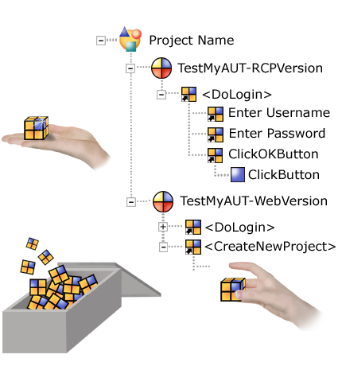

Using Test Cases correctly
Test Cases are building blocks (keywords). You can use small Test Cases to do simple actions, like clicking a component, or entering text. Simple Test Cases like this are already prepared for you to use in the library projects "unbound_modules".
You can then group Test Cases together to test larger sequences, like grouping two text input Test Cases and a click Test Case to make a keyword for a login dialog.
You can create even larger sequences - for example - you could group a set of Test Cases together to create a keyword which fills in a dialog with default data. In this way, you don't have to specify the same actions more than once. Another example of a larger keyword is an "application startup" Test Case. This could contain Test Cases to wait for the application window, wait for the progress bar to disappear, wait for the user interface components to become enabled etc.
Tips on structuring your test
Some people don't find it easy at first to think about how a test should be structured, or what parts can be made into reusable units.
If you know which modules you will need to reuse, then you can create them in advance. If you want to wait and see which modules will be reused, then you can create your test in a more "linear" way at first, just adding the actions you need in the order you need them.
You can use the refactor function to combine one or more Test Cases from an editor into a reusable modules. This gives you the chance to add structure even when you've already started creating your tests.
top of page